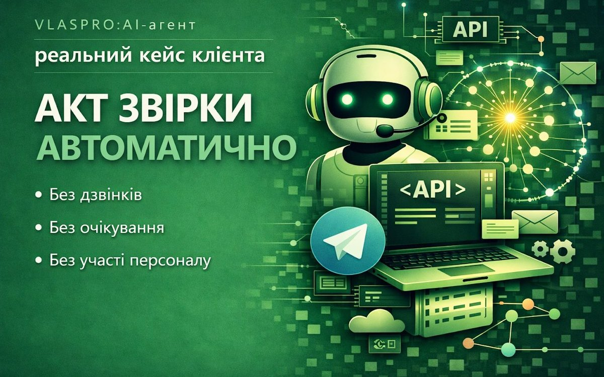

Кейс 01
Акт звірки автоматично в Telegram

Понад 300 ручних формувань акта на місяць більше не відбуваються взагалі.
Бухгалтерія десятки разів на тиждень формувала акти звірки руками: на кожен запит контрагента — дзвінок або лист, пошук, документ, надсилання. Telegram-бот, підключений до облікової бази, дає контрагенту зробити це самому: обрати період і одразу отримати PDF.
- Бухгалтерія. Операція зникла з робочого дня — разом із перериваннями на неї.
- Контрагент. Акт доступний цілодобово й без посередника, зокрема у вихідні.
- Документи. Немає помилок ручного введення: не той період чи не той контрагент.
Демо
Спробуйте самі — просто зараз
Ми відкрили тестового бота, підключеного до тестової бази. Ви можете пройти цей самий сценарій і отримати акт звірки у Telegram — без реєстрації та без домовленостей із нами.
Відкрити демо-ботБаза тестова, дані в ній демонстраційні.
Наведіть камеру телефона